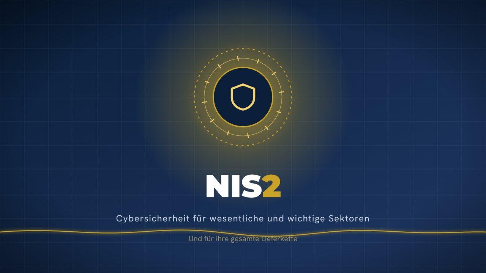

ARG
ARGARGOS › Vorschriften in 4 Minuten › NIS2
NIS2 in 4 Minuten: Deutschland: gilt jetzt, ohne Schonfrist
NIS2 ist die europäische Cybersicherheitsrichtlinie für wesentliche Sektoren und ihre Lieferkette. Abwarten schützt nicht. Die ganze Kette haftet. In Deutschland gilt NIS2 bereits, und zwar ohne Schonfrist.

- 0:00Der Angriff
- 0:12Bußgelder
- 0:32In Deutschland
- 0:59NIS2
- 1:09Vier Schritte
- 1:29Zehn Maßnahmen
- 1:47Termine
- 2:10Europa
- 2:38Das BSI
- 2:57Was tun
Das Wichtigste
- 10 Mio. € oder 2 % des Umsatzes · besonders wichtige Einrichtungen
- 17.10.2024 Umsetzungsfrist der Richtlinie
- 6.12.2025 neues BSI-Gesetz in Kraft
- 6.3.2026 gesetzliche Registrierungsfrist
- 500.000 € Bußgeld allein für eine fehlende Registrierung
- Neues BSIG In Kraft seit Dezember 2025
- ≈ 29.500 Einrichtungen unter BSI-Aufsicht
- Registrierung Frist abgelaufen: Bußgeld droht
Transkript
Vollständiger Text der Sprecherstimme
0:00 · Der Angriff
Montag, sechs Uhr morgens. Die Systeme starten nicht. Die Dateien: verschlüsselt. Der Dienstleister antwortet nicht. Wer meldet was, an wen, und wie schnell?
0:12 · Bußgelder
Die NIS2-Richtlinie sieht Bußgelder vor bis zu zehn Millionen Euro oder zwei Prozent des Umsatzes für besonders wichtige Einrichtungen. Und sie verlangt, erhebliche Vorfälle in drei Stufen zu melden: 24 Stunden, 72 Stunden und ein Monat. Die Geschäftsleitung billigt die Maßnahmen und haftet dafür.
0:32 · In Deutschland
In Deutschland gilt NIS2 bereits, und zwar ohne Schonfrist. Das neue BSI-Gesetz ist seit Dezember 2025 in Kraft. Rund 29.500 Einrichtungen fallen unter die Aufsicht des BSI. Die Registrierungsfrist ist abgelaufen. Die Geschäftsleitung muss billigen, überwachen und sich schulen lassen. Und das BSI kann kritische Komponenten untersagen.
0:59 · NIS2
NIS2 ist die europäische Cybersicherheitsrichtlinie für wesentliche Sektoren und ihre Lieferkette. Abwarten schützt nicht. Die ganze Kette haftet.
1:09 · Vier Schritte
Was sie verlangt, in vier Schritten. Prüfen, ob man betroffen ist: besonders wichtig oder wichtig. Sich beim BSI registrieren. Die zehn Maßnahmen umsetzen, gebilligt von der Leitung. Und erhebliche Vorfälle fristgerecht melden. Die Sicherheit der Lieferanten ist eine dieser zehn Maßnahmen.
1:29 · Zehn Maßnahmen
Von den zehn Maßnahmen machen vier den Unterschied. Risikoanalyse und Sicherheitsrichtlinien. Vorfallbewältigung und Betriebskontinuität. Sicherheit der Lieferkette. Und Multi-Faktor-Authentifizierung und Verschlüsselung. Artikel 21 der Richtlinie.
1:47 · Termine
Die deutschen Termine. 17. Oktober 2024: Frist für die Umsetzung. 6. Dezember 2025: das neue BSI-Gesetz tritt in Kraft. 6. März 2026: die gesetzliche Registrierungsfrist. Und heute: Bis zu 500.000 Euro Bußgeld drohen allein für eine fehlende Registrierung.
2:10 · Europa
In Europa ist NIS2 vielerorts Gesetz. Deutschland: rund 29.500 Einrichtungen, die Leitung haftet persönlich. Italien verlangt die Basismaßnahmen seit Oktober 2026. Belgien setzt auf CyberFundamentals. Portugal macht Geschäftsführer haftbar. Die Niederlande: ohne Übergangsfrist. Dänemark: Aufsicht nach Sektoren. Frankreich und Spanien sind noch ohne Gesetz.
2:38 · Das BSI
In Deutschland gibt es eine zentrale Behörde: das Bundesamt für Sicherheit in der Informationstechnik. Bei ihm registrieren sich die Einrichtungen und melden ihre Vorfälle. Für die Leitung gilt Paragraf 38 des BSI-Gesetzes, nicht delegierbar. Und wer Kunden in Deutschland beliefert, bekommt NIS2 per Vertrag.
2:57 · Was tun
Was jetzt zu tun ist. Betroffenheit prüfen, registrieren, Maßnahmen umsetzen, Meldungen vorbereiten, Lieferanten verpflichten. ARGOS prüft es fortlaufend, mit Sonden an den realen Systemen und Nachweisen für Prüfer und Kunden. NIS2: Cybersicherheit muss man nachweisen.
Häufige Fragen
Was ist NIS2?
NIS2 ist die europäische Cybersicherheitsrichtlinie für wesentliche Sektoren und ihre Lieferkette. Abwarten schützt nicht. Die ganze Kette haftet. Die NIS2-Richtlinie sieht Bußgelder vor bis zu zehn Millionen Euro oder zwei Prozent des Umsatzes für besonders wichtige Einrichtungen. Und sie verlangt, erhebliche Vorfälle in drei Stufen zu melden: 24 Stunden, 72 Stunden und ein Monat. Die Geschäftsleitung billigt die Maßnahmen und haftet dafür.
Was verlangt NIS2?
Was sie verlangt, in vier Schritten. Prüfen, ob man betroffen ist: besonders wichtig oder wichtig. Sich beim BSI registrieren. Die zehn Maßnahmen umsetzen, gebilligt von der Leitung. Und erhebliche Vorfälle fristgerecht melden. Die Sicherheit der Lieferanten ist eine dieser zehn Maßnahmen.
Welche Termine sind wichtig?
Die deutschen Termine. 17. Oktober 2024: Frist für die Umsetzung. 6. Dezember 2025: das neue BSI-Gesetz tritt in Kraft. 6. März 2026: die gesetzliche Registrierungsfrist. Und heute: Bis zu 500.000 Euro Bußgeld drohen allein für eine fehlende Registrierung.
Was gilt in Deutschland?
In Deutschland gilt NIS2 bereits, und zwar ohne Schonfrist. Das neue BSI-Gesetz ist seit Dezember 2025 in Kraft. Rund 29.500 Einrichtungen fallen unter die Aufsicht des BSI. Die Registrierungsfrist ist abgelaufen. Die Geschäftsleitung muss billigen, überwachen und sich schulen lassen. Und das BSI kann kritische Komponenten untersagen. In Deutschland gibt es eine zentrale Behörde: das Bundesamt für Sicherheit in der Informationstechnik. Bei ihm registrieren sich die Einrichtungen und melden ihre Vorfälle. Für die Leitung gilt Paragraf 38 des BSI-Gesetzes, nicht delegierbar. Und wer Kunden in Deutschland beliefert, bekommt NIS2 per Vertrag.
Was sollte ein Unternehmen jetzt tun?
Was jetzt zu tun ist. Betroffenheit prüfen, registrieren, Maßnahmen umsetzen, Meldungen vorbereiten, Lieferanten verpflichten. ARGOS prüft es fortlaufend, mit Sonden an den realen Systemen und Nachweisen für Prüfer und Kunden. NIS2: Cybersicherheit muss man nachweisen.
Offizielle Quellen
- Richtlinie (EU) 2022/2555 (NIS2) (EUR-Lex)
- Durchführungsverordnung (EU) 2024/2690 (EUR-Lex)
- BSI
- Regulierungsdatenblätter von Software in a Box
Weiter mit
 Data Act und DGA
Data Act und DGAData Act und DGA in 4 Minuten: Deutschland: eine Behörde mit Biss
 C5 und ISO
C5 und ISOC5 und ISO in 4 Minuten: Ein Nachweis ist kein Formular
 DSGVO
DSGVODSGVO in 4 Minuten: Geahndet wird vor allem das Grundsätzliche
Sprecherstimme und Musik mit künstlicher Intelligenz erzeugt (Art. 50 KI-Verordnung). Allgemeine Information, keine Rechtsberatung; Stand November 2026, nach den Regulierungsdatenblättern von Software in a Box. Videoclips lizenziert über Envato.
Zum Einbinden dieser Präsentation in eine andere Website: <iframe src="https://argos.softwareinabox.eu/de/vorschriften/nis2/presentacion/?embed=1" width="960" height="540" allow="autoplay; fullscreen" title="NIS2 in 4 Minuten: Deutschland: gilt jetzt, ohne Schonfrist"></iframe> mit einem Link auf diese Seite.
Auch verfügbar auf: EspañolFrançaisFrançais (Belgique)ItalianoNederlandsNederlands (België)PortuguêsDansk